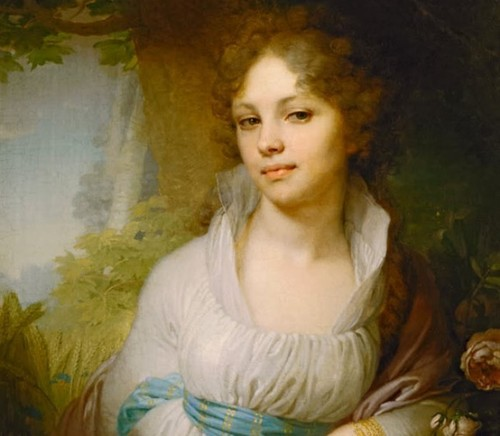
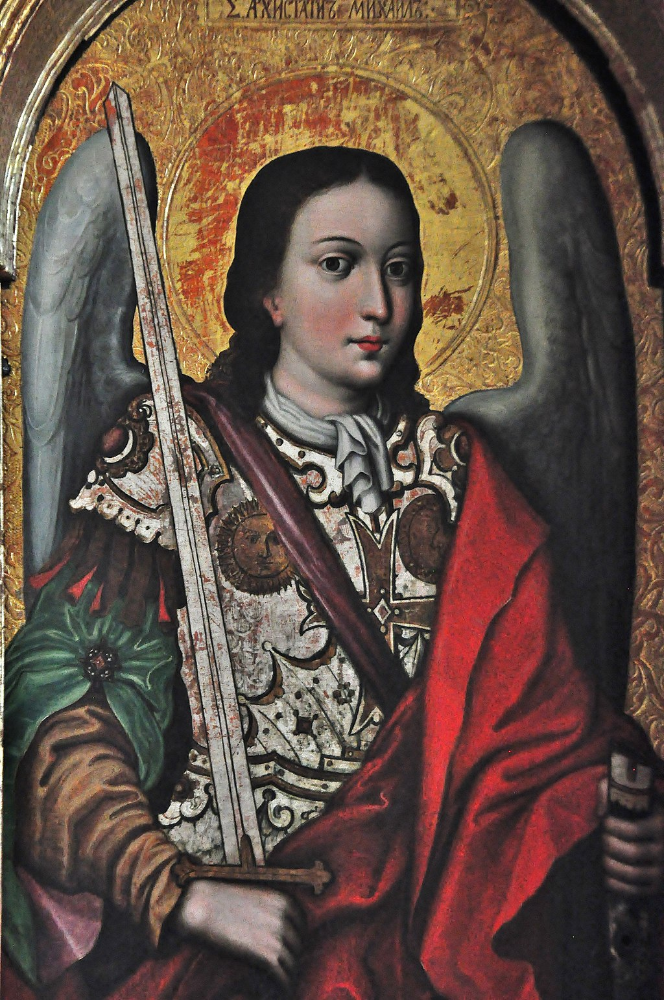
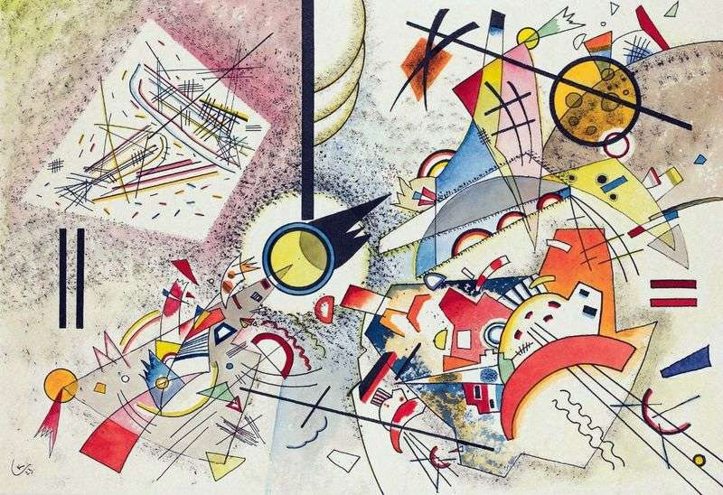
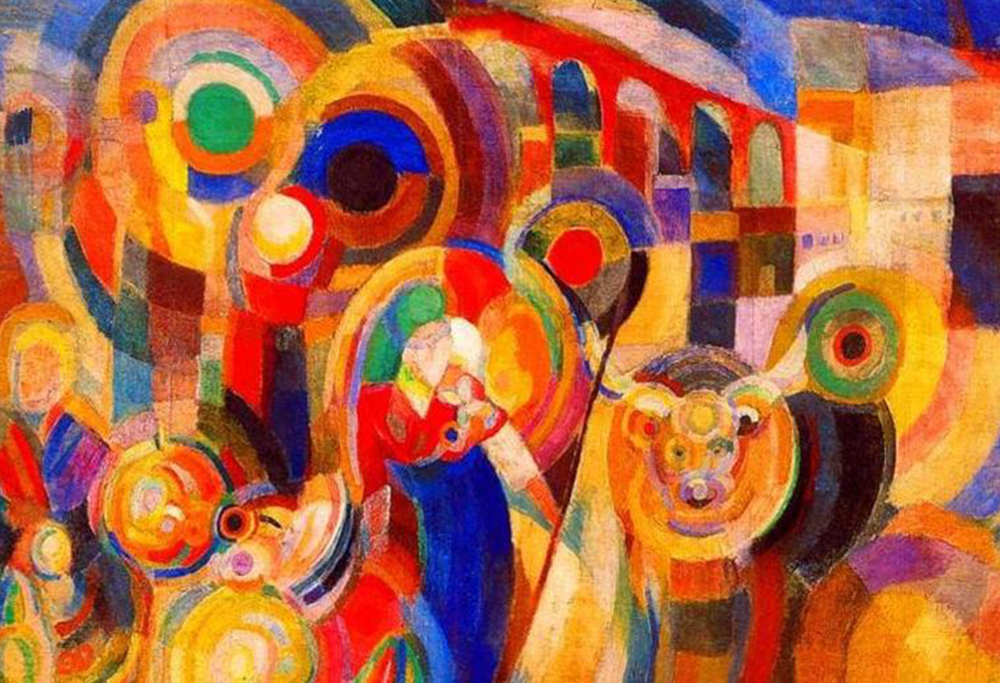
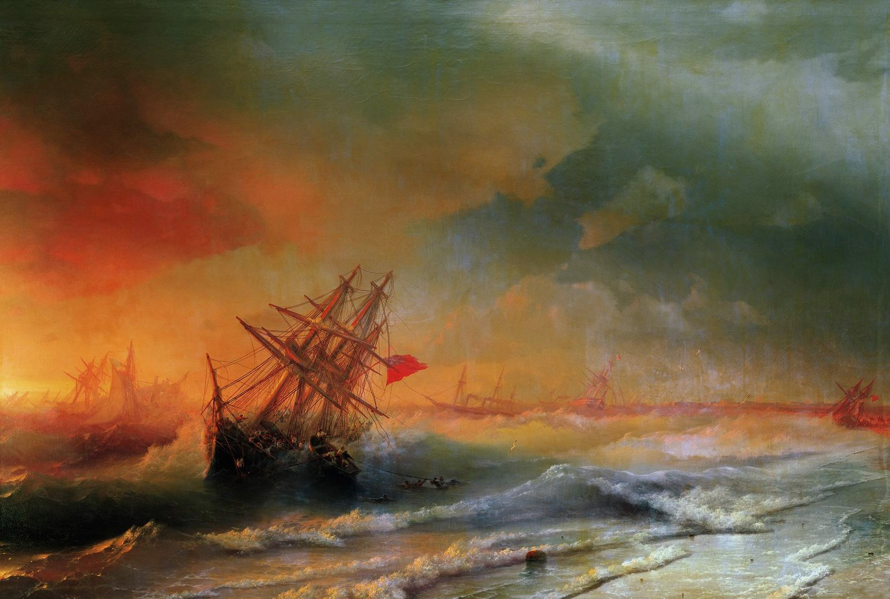
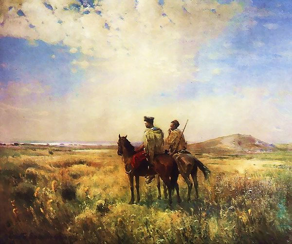
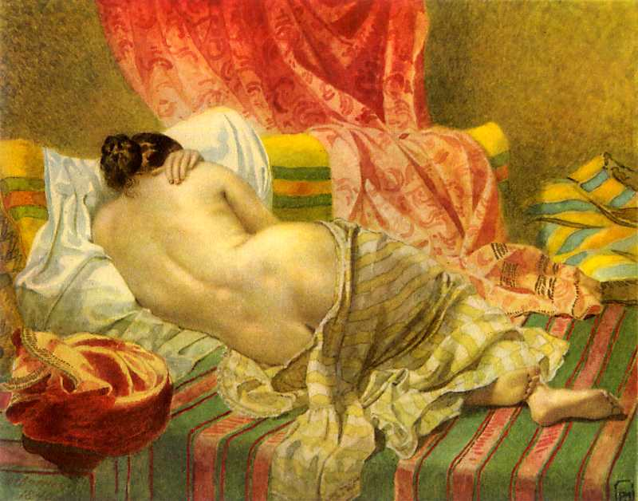
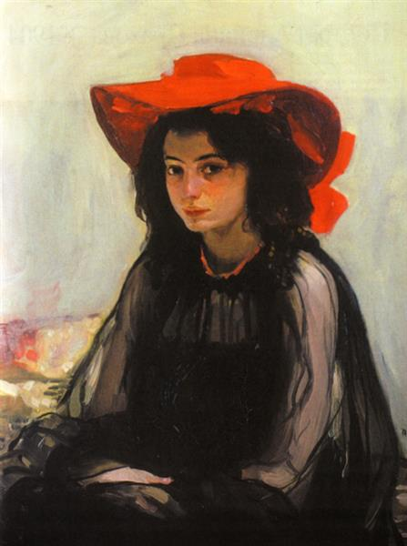
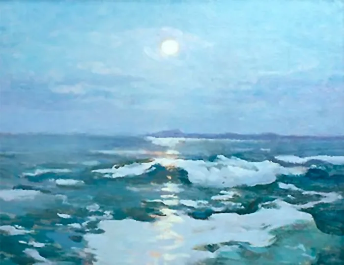

-

Володимир Боровиковський - це видатний український художник-портретист, який жив та творив у XVIII та XIX столітті. Його творчість характеризується використанням тонкого малярського почерку та вірністю деталям. Він намагався передати психологічну глибину своїх героїв, відображати їхні характери та настрої на полотні. Його портрети вважаються класикою жанру та є національним скарбом України.
Володимир Боровик
1757-1825
-

Іов Конзелевич - це український художник, який займається мистецтвом сакральної символіки. Його творчість характеризується використанням глибоких символів та містичних образів, які передають духовність та мудрість. Він створює живописні композиції, ікони, а також декоративно-ужиткові роботи. Творчість Іова Конзелевича є важливою частиною української національної культури та мистецтва.
Іов Конзелевич
1667-між 1740 та 1748
-

Василь Кандинський - це видатний російський художник та теоретик мистецтва, який став одним з піонерів абстрактного живопису. Його творчість характеризується використанням геометричних форм та яскравих кольорів, що передає внутрішній світ та почуття митця. Він прагнув відокремити живопис від зображування реальних об'єктів та подій, а замість цього зображувати чисту емоцію та духовний світ. його творчість стала визначною у розвитку сучасного мистецтва.
Василь Кандинський
1866-1944
-

Сона Делоне - це українсько-французька художниця, яка працює в жанрі сюрреалізму та магічного реалізму. Її творчість характеризується використанням несподіваних та незвичних поєднань образів, які створюють неповторну атмосферу та враження. Вона створює живописні твори, гравюри та ілюстрації, які часто містять елементи фантастики та містики. Творчість Соні Делоне є незвичайною та привертає увагу глядачів своєю таємничістю та незвичайністю.
Соня Делоне
1885-1979
-

Іван Айвазовський - це відомий український художник-мариніст, який спеціалізувався на зображенні морських пейзажів. Його творчість характеризується майстерністю в передачі світла та тіні, зміни погодних умов та морських перспектив. Він створив безліч шедеврів, які здатні перенести глядачів до світу моря, сонця та хвиль. Творчість Айвазовського досі є незабутньою та надихає наступні покоління художників.
Іван Айвазовський
1817-1900
-

Сергій Васильківський - це відомий український художник, який спеціалізується на жанрі пейзажу. Він відомий своїми реалістичними творами, які передають красу української природи та мальовничість українських сіл та міст. Васильківський працює у техніці масляного живопису, а його твори є часто предметом виставок та експозицій українських музеїв та галерей.
Сергій Васильківський
1854-1917
-

Тарас Шевченко - відомий український поет та художник. Його творчість в області живопису характеризується романтичним стилем та соціально-політичним змістом. Він створював портрети та пейзажі, зображуючи українську природу та народні обряди. Шевченко також відомий своїми ілюстраціями до власних творів та літературних творів інших письменників. Його твори можна побачити в багатьох музеях України та світу.
Тарас Шевченко
1814-1861
-

Олександр Мурашко - це український художник, який створює живописні та графічні твори в сучасному стилі. Його творчість характеризується яскравими кольорами, абстрактними формами та геометричними лініями. Він також працює у техніках монотипії та ліногравюри. Твори Мурашка можна побачити на виставках та в колекціях багатьох українських музеїв та галерей.
Олександр Мурашко
1875-1919
-

Іван Труш - відомий український художник, графік та кераміст. Він створював яскраві та експресивні композиції, що відображали народну культуру та історію України. Труш здебільшого працював у техніці гравюри та літої кераміки, а також малював картини у стилі соціального реалізму. Його твори можна знайти в багатьох музеях України та за її межами.
Іван Труш
1869-1941